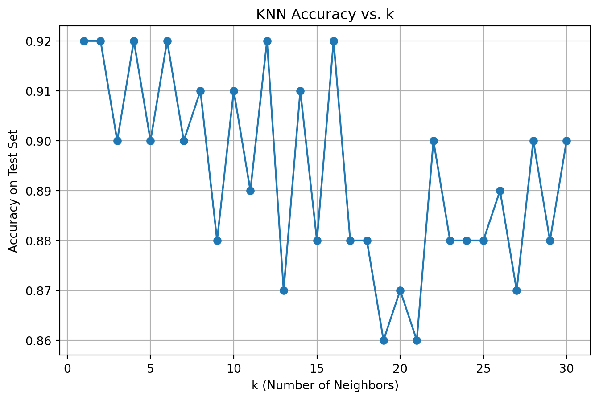

We start by loading the Palmer Penguins dataset and selecting only the two numeric features we’ll use for clustering: bill length and flipper length. We also scale the data to have zero mean and unit variance.
Show code
import pandas as pdimport numpy as npfrom sklearn.preprocessing import StandardScaler# Load data and select featuresdf = pd.read_csv("palmer_penguins.csv")df = df[['bill_length_mm', 'flipper_length_mm']].dropna()# Standardize the featuresscaler = StandardScaler()X = scaler.fit_transform(df)
Define Helper Functions
To build our own K-Means algorithm, we need a function to compute Euclidean distances between points and cluster centroids.
Show code
# Helper: Euclidean distance between array of points and a centroiddef euclidean(a, b):return np.linalg.norm(a - b, axis=1)
Implement K-Means from Scratch
Here’s the main loop of the K-Means algorithm: 1. Randomly initialize k centroids. 2. Assign each point to the nearest centroid. 3. Recompute the centroids. 4. Repeat until convergence.
We also keep track of centroid history for visualization.
Show code
def kmeans_custom(X, k=3, max_iters=10, seed=42): np.random.seed(seed) centroids = X[np.random.choice(len(X), size=k, replace=False)] history = [centroids.copy()]for _ inrange(max_iters): distances = np.array([euclidean(X, c) for c in centroids]) labels = np.argmin(distances, axis=0) new_centroids = np.array([X[labels == i].mean(axis=0) for i inrange(k)]) history.append(new_centroids.copy())if np.allclose(new_centroids, centroids):break centroids = new_centroidsreturn labels, centroids, history
Run the Algorithm
Let’s run the custom K-Means on the penguins dataset with k=3 and visualize the result.
Show code
labels, final_centroids, history = kmeans_custom(X, k=3)
Visualize Final Clustering
We plot the data points colored by cluster assignment, along with the final centroids.
The plot illustrates the result of applying a custom K-Means clustering algorithm with k=3 to the Palmer Penguins dataset, using bill length and flipper length as input features. Each point represents a penguin, colored by its assigned cluster, and the large red Xs indicate the final centroid of each cluster. The clustering reveals three distinct groups: one consisting of penguins with relatively shorter bills and flippers (left cluster), another with longer bills but shorter flippers (bottom-right), and a third with both longer bills and flippers (top-right). The clear separation and compactness of the clusters suggest that bill and flipper length are useful features for grouping the penguins, potentially reflecting differences in species or ecological niches. Since the features were standardized, the interpretation focuses on relative size rather than raw measurements.
Evaluate the Optimal Number of Clusters
To assess the best value for ( k ), we compute two metrics:
Within-Cluster Sum of Squares (WCSS): Measures compactness; lower is better.
Silhouette Score: Measures how well-separated the clusters are; ranges from -1 to 1, and higher is better.
We compute both for ( k = 2 ) to ( 7 ) using the built-in KMeans implementation from sklearn.
Show code
from sklearn.cluster import KMeansfrom sklearn.metrics import silhouette_scorewcss = []silhouette_scores = []k_values =range(2, 8)for k in k_values: kmeans = KMeans(n_clusters=k, random_state=42, n_init=10) labels = kmeans.fit_predict(X) wcss.append(kmeans.inertia_) silhouette_scores.append(silhouette_score(X, labels))
Plot the Metrics
We now visualize the WCSS and silhouette scores to identify the “best” number of clusters.
Show code
import matplotlib.pyplot as pltfig, ax = plt.subplots(1, 2, figsize=(14, 5))# WCSS (Elbow method)ax[0].plot(k_values, wcss, marker='o')ax[0].set_title('Elbow Method (WCSS)')ax[0].set_xlabel('Number of clusters (k)')ax[0].set_ylabel('WCSS')# Silhouette Scoresax[1].plot(k_values, silhouette_scores, marker='o', color='green')ax[1].set_title('Silhouette Score')ax[1].set_xlabel('Number of clusters (k)')ax[1].set_ylabel('Score')plt.tight_layout()plt.show()
The Elbow Method plot displays the Within-Cluster Sum of Squares (WCSS) for different values of k ranging from 2 to 7. WCSS measures the compactness of the clusters, with lower values indicating tighter, more cohesive clusters. As the number of clusters increases, WCSS naturally decreases. However, the key insight comes from identifying the “elbow” point—where the rate of decrease sharply levels off. In this plot, the most noticeable elbow appears at k=3, suggesting that increasing the number of clusters beyond 3 results in only marginal improvements in cluster compactness. Therefore, k=3 is likely the optimal number of clusters, balancing simplicity with good fit.
2. K Nearest Neighbors
In this section, we will explore the K-Nearest Neighbors (KNN) algorithm using a synthetic dataset. The outcome variable y is determined by whether x2 is above or below a wiggly boundary defined by a sine function.
Generate training data
We first generate a synthetic dataset of 100 observations. The horizontal axis is x1, the vertical axis is x2, and the color indicates the binary outcome y. We also draw the underlying wiggly boundary.
Show code
import numpy as npimport pandas as pd# gen datanp.random.seed(42)n =100x1 = np.random.uniform(-3, 3, n)x2 = np.random.uniform(-3, 3, n)x = np.column_stack((x1, x2))# define a wiggly boundaryboundary = np.sin(4* x1) + x1y = np.where(x2 > boundary, 1, 0).astype(str) # convert to string to mimic factordat = pd.DataFrame({'x1': x1, 'x2': x2, 'y': y})
Plot the data
We now visualize the training data. Each point is colored by its class label (y). The dashed line shows the underlying wiggly boundary used to generate the labels.
Show code
import matplotlib.pyplot as pltplt.figure(figsize=(7, 6))plt.scatter(dat['x1'], dat['x2'], c=dat['y'].astype(int), cmap='bwr', edgecolor='k', alpha=0.7, label='Points')plt.plot(np.sort(x1), np.sin(4* np.sort(x1)) + np.sort(x1), color='black', linestyle='--', label='Boundary')plt.xlabel("x1")plt.ylabel("x2")plt.title("Synthetic Training Data with Wiggly Boundary")plt.legend()plt.grid(True)plt.show()
Generate a test dataset
We generate a new dataset with the same structure, using a different random seed. This will serve as our test set for evaluating model performance.
We now evaluate the prediction accuracy of our KNN classifier on the test set for values of ( k = 1 ) to ( 30 ). The x-axis is ( k ), and the y-axis is the classification accuracy.
Show code
# Prepare data for loopX_train = dat[['x1', 'x2']].valuesy_train = dat['y'].valuesX_test = test[['x1', 'x2']].valuesy_test = test['y'].values# Evaluate accuracy for k = 1 to 30k_values =range(1, 31)accuracy = []for k in k_values: preds = knn_predict(X_train, y_train, X_test, k) acc = np.mean(preds == y_test) accuracy.append(acc)# Plot resultsplt.figure(figsize=(8, 5))plt.plot(k_values, accuracy, marker='o')plt.xlabel("k (Number of Neighbors)")plt.ylabel("Accuracy on Test Set")plt.title("KNN Accuracy vs. k")plt.grid(True)plt.show()

The plot above shows how the classification accuracy of the K-Nearest Neighbors (KNN) model on the test set changes as the number of neighbors k varies from 1 to 30. Overall, we observe that smaller values of k, especially between 1 and 5, tend to yield higher accuracy, with several points reaching or exceeding 92%. As k increases beyond 10, the model’s accuracy generally declines, fluctuating around 87%–90%, with a few dips as low as 86%. This trend suggests that the model performs best when it is more flexible and responsive to local patterns (i.e., low k), while larger k values overly smooth the decision boundary and underfit the data. Therefore, the optimal k for this task appears to be around 1 to 5, where accuracy is consistently highest.
Source Code
---title: "Machine Learning Models"author: "Lebin Sun"date: June 11, 2025---## 1. K-Means### Load and Prepare the DataWe start by loading the Palmer Penguins dataset and selecting only the two numeric features we'll use for clustering: **bill length** and **flipper length**. We also scale the data to have zero mean and unit variance.```{python}import pandas as pdimport numpy as npfrom sklearn.preprocessing import StandardScaler# Load data and select featuresdf = pd.read_csv("palmer_penguins.csv")df = df[['bill_length_mm', 'flipper_length_mm']].dropna()# Standardize the featuresscaler = StandardScaler()X = scaler.fit_transform(df)```### Define Helper FunctionsTo build our own K-Means algorithm, we need a function to compute Euclidean distances between points and cluster centroids.```{python}# Helper: Euclidean distance between array of points and a centroiddef euclidean(a, b):return np.linalg.norm(a - b, axis=1)```### Implement K-Means from ScratchHere's the main loop of the K-Means algorithm:1. Randomly initialize `k` centroids.2. Assign each point to the nearest centroid.3. Recompute the centroids.4. Repeat until convergence.We also keep track of centroid history for visualization.```{python}def kmeans_custom(X, k=3, max_iters=10, seed=42): np.random.seed(seed) centroids = X[np.random.choice(len(X), size=k, replace=False)] history = [centroids.copy()]for _ inrange(max_iters): distances = np.array([euclidean(X, c) for c in centroids]) labels = np.argmin(distances, axis=0) new_centroids = np.array([X[labels == i].mean(axis=0) for i inrange(k)]) history.append(new_centroids.copy())if np.allclose(new_centroids, centroids):break centroids = new_centroidsreturn labels, centroids, history```### Run the AlgorithmLet’s run the custom K-Means on the penguins dataset with `k=3` and visualize the result.```{python}labels, final_centroids, history = kmeans_custom(X, k=3)```### Visualize Final ClusteringWe plot the data points colored by cluster assignment, along with the final centroids.```{python}import matplotlib.pyplot as pltplt.figure(figsize=(8, 6))plt.scatter(X[:, 0], X[:, 1], c=labels, cmap='viridis', alpha=0.7)plt.scatter(final_centroids[:, 0], final_centroids[:, 1], color='red', marker='X', s=200)plt.xlabel("Bill Length (scaled)")plt.ylabel("Flipper Length (scaled)")plt.title("Custom K-Means Clustering (k=3)")plt.grid(True)plt.show()```The plot illustrates the result of applying a custom K-Means clustering algorithm with k=3 to the Palmer Penguins dataset, using bill length and flipper length as input features. Each point represents a penguin, colored by its assigned cluster, and the large red Xs indicate the final centroid of each cluster. The clustering reveals three distinct groups: one consisting of penguins with relatively shorter bills and flippers (left cluster), another with longer bills but shorter flippers (bottom-right), and a third with both longer bills and flippers (top-right). The clear separation and compactness of the clusters suggest that bill and flipper length are useful features for grouping the penguins, potentially reflecting differences in species or ecological niches. Since the features were standardized, the interpretation focuses on relative size rather than raw measurements.### Evaluate the Optimal Number of ClustersTo assess the best value for \( k \), we compute two metrics:- **Within-Cluster Sum of Squares (WCSS)**: Measures compactness; lower is better.- **Silhouette Score**: Measures how well-separated the clusters are; ranges from -1 to 1, and higher is better.We compute both for \( k = 2 \) to \( 7 \) using the built-in `KMeans` implementation from `sklearn`.```{python}from sklearn.cluster import KMeansfrom sklearn.metrics import silhouette_scorewcss = []silhouette_scores = []k_values =range(2, 8)for k in k_values: kmeans = KMeans(n_clusters=k, random_state=42, n_init=10) labels = kmeans.fit_predict(X) wcss.append(kmeans.inertia_) silhouette_scores.append(silhouette_score(X, labels))```### Plot the MetricsWe now visualize the WCSS and silhouette scores to identify the "best" number of clusters.```{python}import matplotlib.pyplot as pltfig, ax = plt.subplots(1, 2, figsize=(14, 5))# WCSS (Elbow method)ax[0].plot(k_values, wcss, marker='o')ax[0].set_title('Elbow Method (WCSS)')ax[0].set_xlabel('Number of clusters (k)')ax[0].set_ylabel('WCSS')# Silhouette Scoresax[1].plot(k_values, silhouette_scores, marker='o', color='green')ax[1].set_title('Silhouette Score')ax[1].set_xlabel('Number of clusters (k)')ax[1].set_ylabel('Score')plt.tight_layout()plt.show()```The Elbow Method plot displays the Within-Cluster Sum of Squares (WCSS) for different values of k ranging from 2 to 7. WCSS measures the compactness of the clusters, with lower values indicating tighter, more cohesive clusters. As the number of clusters increases, WCSS naturally decreases. However, the key insight comes from identifying the "elbow" point—where the rate of decrease sharply levels off. In this plot, the most noticeable elbow appears at k=3, suggesting that increasing the number of clusters beyond 3 results in only marginal improvements in cluster compactness. Therefore, k=3 is likely the optimal number of clusters, balancing simplicity with good fit.## 2. K Nearest NeighborsIn this section, we will explore the K-Nearest Neighbors (KNN) algorithm using a synthetic dataset. The outcome variable `y` is determined by whether `x2` is above or below a wiggly boundary defined by a sine function.### Generate training dataWe first generate a synthetic dataset of 100 observations. The horizontal axis is `x1`, the vertical axis is `x2`, and the color indicates the binary outcome `y`. We also draw the underlying wiggly boundary.```{python}import numpy as npimport pandas as pd# gen datanp.random.seed(42)n =100x1 = np.random.uniform(-3, 3, n)x2 = np.random.uniform(-3, 3, n)x = np.column_stack((x1, x2))# define a wiggly boundaryboundary = np.sin(4* x1) + x1y = np.where(x2 > boundary, 1, 0).astype(str) # convert to string to mimic factordat = pd.DataFrame({'x1': x1, 'x2': x2, 'y': y})```### Plot the dataWe now visualize the training data. Each point is colored by its class label (`y`). The dashed line shows the underlying wiggly boundary used to generate the labels.```{python}import matplotlib.pyplot as pltplt.figure(figsize=(7, 6))plt.scatter(dat['x1'], dat['x2'], c=dat['y'].astype(int), cmap='bwr', edgecolor='k', alpha=0.7, label='Points')plt.plot(np.sort(x1), np.sin(4* np.sort(x1)) + np.sort(x1), color='black', linestyle='--', label='Boundary')plt.xlabel("x1")plt.ylabel("x2")plt.title("Synthetic Training Data with Wiggly Boundary")plt.legend()plt.grid(True)plt.show()```### Generate a test datasetWe generate a new dataset with the same structure, using a **different random seed**. This will serve as our test set for evaluating model performance.```{python}# Generate test data (different seed)np.random.seed(99)x1_test = np.random.uniform(-3, 3, n)x2_test = np.random.uniform(-3, 3, n)boundary_test = np.sin(4* x1_test) + x1_testy_test = np.where(x2_test > boundary_test, 1, 0).astype(str)test = pd.DataFrame({'x1': x1_test, 'x2': x2_test, 'y': y_test})```### Implement KNN by handNow we implement the KNN classifier manually. Later, we can compare it with `KNeighborsClassifier` from `scikit-learn` to validate the results.```{python}from collections import Counterdef knn_predict(X_train, y_train, X_test, k): preds = []for xt in X_test: distances = np.linalg.norm(X_train - xt, axis=1) nearest_indices = np.argsort(distances)[:k] nearest_labels = y_train[nearest_indices] pred = Counter(nearest_labels).most_common(1)[0][0] preds.append(pred)return np.array(preds)```### Run KNN for k = 1,...,30We now evaluate the prediction accuracy of our KNN classifier on the test set for values of \( k = 1 \) to \( 30 \). The x-axis is \( k \), and the y-axis is the classification accuracy.```{python}# Prepare data for loopX_train = dat[['x1', 'x2']].valuesy_train = dat['y'].valuesX_test = test[['x1', 'x2']].valuesy_test = test['y'].values# Evaluate accuracy for k = 1 to 30k_values =range(1, 31)accuracy = []for k in k_values: preds = knn_predict(X_train, y_train, X_test, k) acc = np.mean(preds == y_test) accuracy.append(acc)# Plot resultsplt.figure(figsize=(8, 5))plt.plot(k_values, accuracy, marker='o')plt.xlabel("k (Number of Neighbors)")plt.ylabel("Accuracy on Test Set")plt.title("KNN Accuracy vs. k")plt.grid(True)plt.show()```The plot above shows how the classification accuracy of the K-Nearest Neighbors (KNN) model on the test set changes as the number of neighbors k varies from 1 to 30. Overall, we observe that smaller values of k, especially between 1 and 5, tend to yield higher accuracy, with several points reaching or exceeding 92%. As k increases beyond 10, the model's accuracy generally declines, fluctuating around 87%–90%, with a few dips as low as 86%. This trend suggests that the model performs best when it is more flexible and responsive to local patterns (i.e., low k), while larger k values overly smooth the decision boundary and underfit the data. Therefore, the optimal k for this task appears to be around 1 to 5, where accuracy is consistently highest.